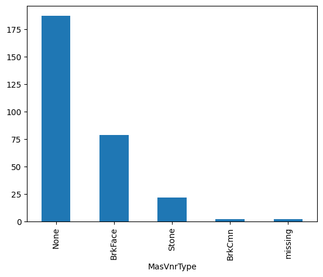
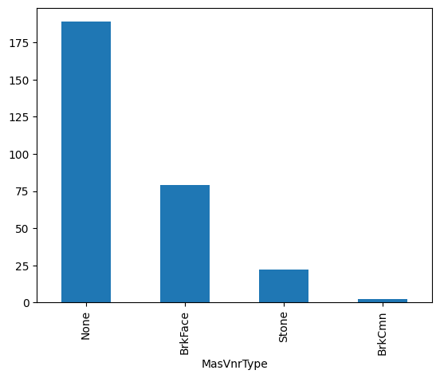

Programmatic API Reference#
Categorical data are common in most data science projects and can also show missing values. There are 2 main imputation methods that are used to replace missing data in categorical variables. One method consists of replacing the missing values with the most frequent category. The second method consists of replacing missing values with a dedicated string, for example, “Missing.”
Scikit-learn’s machine learning algorithms can neither handle missing data nor categorical variables out of the box. Hence, during data preprocessing, we need to use imputation techniques to replace the nan values by any permitted value and then proceed with categorical encoding, before training classification or regression models.
Handling missing values#
Feature-engine’s CategoricalImputer() can replace missing data in categorical
variables with an arbitrary value, like the string ‘Missing’, or with the most frequent
category.
You can impute a subset of the categorical variables by passing their names to
CategoricalImputer() in a list. Alternatively, the categorical imputer automatically
finds and imputes all variables of type object and categorical found in the training dataframe.
Originally, we designed this imputer to work only with categorical variables. In version
1.1.0, we introduced the parameter ignore_format to allow the imputer to also impute
numerical variables with this functionality. This is because, in some cases, variables
that are by nature categorical have numerical values.
Python implementation#
We’ll show the CategoricalImputer()’s data imputation functionality using the
Ames house prices dataset. We’ll start by loading the necessary libraries, functions and
classes, loading the dataset, and separating it into a training and a test set.
import matplotlib.pyplot as plt
from sklearn.datasets import fetch_openml
from sklearn.model_selection import train_test_split
from feature_engine.imputation import CategoricalImputer
data = fetch_openml(name='house_prices', as_frame=True)
data = data.frame
X = data.drop(['SalePrice', 'Id'], axis=1)
y = data['SalePrice']
X_train, X_test, y_train, y_test = train_test_split(
X, y, test_size=0.2, random_state=42)
print(X_train.head())
In the following output we see the predictor variables of the house prices dataset:
MSSubClass MSZoning LotFrontage LotArea Street Alley LotShape \
254 20 RL 70.0 8400 Pave NaN Reg
1066 60 RL 59.0 7837 Pave NaN IR1
638 30 RL 67.0 8777 Pave NaN Reg
799 50 RL 60.0 7200 Pave NaN Reg
380 50 RL 50.0 5000 Pave Pave Reg
LandContour Utilities LotConfig ... ScreenPorch PoolArea PoolQC Fence \
254 Lvl AllPub Inside ... 0 0 NaN NaN
1066 Lvl AllPub Inside ... 0 0 NaN NaN
638 Lvl AllPub Inside ... 0 0 NaN MnPrv
799 Lvl AllPub Corner ... 0 0 NaN MnPrv
380 Lvl AllPub Inside ... 0 0 NaN NaN
MiscFeature MiscVal MoSold YrSold SaleType SaleCondition
254 NaN 0 6 2010 WD Normal
1066 NaN 0 5 2009 WD Normal
638 NaN 0 5 2008 WD Normal
799 NaN 0 6 2007 WD Normal
380 NaN 0 5 2010 WD Normal
[5 rows x 79 columns]
These 2 variables show null values, let’s check that out:
X_train[['Alley', 'MasVnrType']].isnull().sum()
We see the null values in the following output:
Alley 1094
MasVnrType 6
dtype: int64
Imputation with an arbitrary string#
Let’s set up the categorical imputer to impute these 2 variables with the arbitrary string ‘missing’:
imputer = CategoricalImputer(
variables=['Alley', 'MasVnrType'],
fill_value="missing",
)
imputer.fit(X_train)
During fit, the transformer corroborates that the 2 variables are of type object or categorical and creates a dictionary of variable to replacement value.
We can check the value that will be use to “fillna” as follows:
imputer.fill_value
We can check the dictionary with the replacement values per variable like this:
imputer.imputer_dict_
The dictionary contains the names of the variables in its keys and the imputation value among its values. In this case, the result is not super exciting because we are replacing nan values in all variables with the same value:
{'Alley': 'missing', 'MasVnrType': 'missing'}
We can now go ahead and impute the missing data and then plot the categories in the resulting variable after the imputation:
train_t = imputer.transform(X_train)
test_t = imputer.transform(X_test)
test_t['MasVnrType'].value_counts().plot.bar()
plt.ylabel("Number of observations")
plt.show()
In the following plot, we see the presence of the category “missing”, corresponding to the imputed values:
Imputation with the most frequent category#
Let’s now impute the variables with the most frequent category instead:
imputer = CategoricalImputer(
variables=['Alley', 'MasVnrType'],
imputation_method="frequent"
)
imputer.fit(X_train)
We can find the most frequent category per variable in the imputer dictionary:
imputer.imputer_dict_
In the following output, we see that the most frequent category for Alley is 'Grvl' and the
most frequent value for MasVnrType is 'None'.
{'Alley': 'Grvl', 'MasVnrType': 'None'}
We can now go ahead and impute the missing data to obtain a complete dataset, at least for these 2 variables, and then plot the distribution of values after the imputation:
train_t = imputer.transform(X_train)
test_t = imputer.transform(X_test)
test_t['MasVnrType'].value_counts().plot.bar()
plt.ylabel("Number of observations")
plt.show()
In the following image we see the resulting variable distribution:
Automatically impute all categorical variables#
CategoricalImputer() can automatically find and impute all categorical features
in the training dataset when we set the parameter variables to None:
imputer = CategoricalImputer(
variables=None,
)
train_t = imputer.fit_transform(X_train)
test_t = imputer.transform(X_test)
We can find the categorical variables in the variables_ attribute:
imputer.variables_
Below, we see the list of categorical variables that were found in the training dataframe:
['MSZoning',
'Street',
'Alley',
'LotShape',
'LandContour',
...
'SaleType',
'SaleCondition']
Categorical features with 2 modes#
It is possible that one variable has more than one mode. In that case, the transformer will raise an error. For example, when you set the transformer to impute the variable ‘PoolQC` with the most frequent value:
imputer = CategoricalImputer(
variables=['PoolQC'],
imputation_method="frequent"
)
imputer.fit(X_train)
‘PoolQC` has more than 1 mode, so the transformer raises the following error:
196 self.imputer_dict_ = {var: mode_vals[0]}
198 # imputing multiple variables:
199 else:
200 # Returns a dataframe with 1 row if there is one mode per
201 # variable, or more rows if there are more modes:
ValueError: The variable PoolQC contains multiple frequent categories.
We can check that the variable has various modes like this:
X_train['PoolQC'].mode()
We see that this variable has 3 categories with similar maximum number of observations:
0 Ex
1 Fa
2 Gd
Name: PoolQC, dtype: object
Considerations#
Replacing missing values in categorical features with a bespoke category is standard practice and perhaps the more natural thing to do. We’ll probably want to impute with the most frequent category when the percentage of missing values is small and the cardinality of the variable is low, not to introduce unnecessary noise.
Combining imputation with data analysis is useful to decide the most convenient imputation method as well as the impact of the imputation on the variable distribution. Note that the variable distribution and its cardinality will affect the performance and workings of machine learning models.
Imputation with the most frequent category will blend the missing values with the most
common values of the variable. Hence, it is common practice to add dummy variables to
indicate that the values were originally missing. See AddMissingIndicator.
Additional resources#
For more details about this and other feature engineering methods check out these resources:

Feature Engineering for Machine Learning#
Or read our book:

Python Feature Engineering Cookbook#
Both our book and course are suitable for beginners and more advanced data scientists alike. By purchasing them you are supporting Sole, the main developer of Feature-engine.